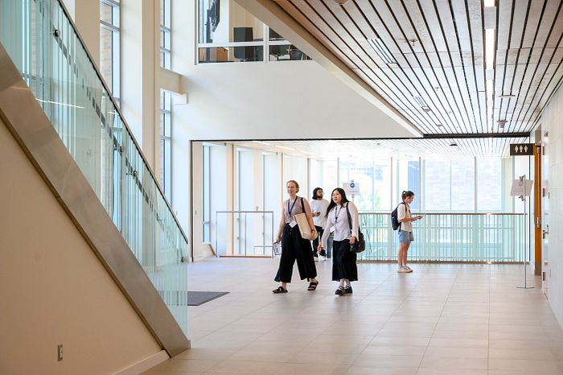
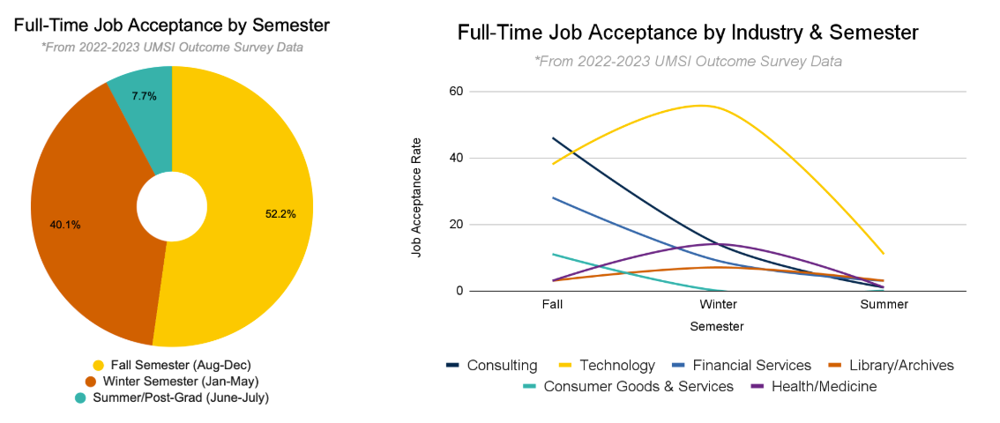
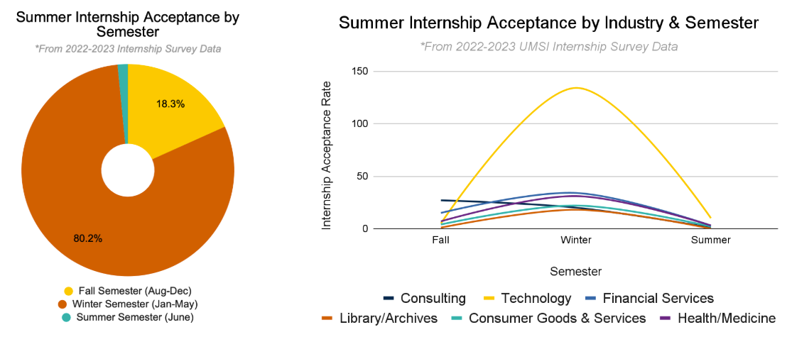

Reflect on Your Priorities
Make a list of what matters to you in your search.
Before beginning to apply for roles, it can be helpful to define what you're looking for in a job or internship first.
Some questions to get started:
- What top 3 'things' am I looking for? (ex: salary, mentorship, professional development)
- What top 5 titles am I interested in?
- What are my top industries?
- Where do I want to work? In what modality? (ex: hybrid, remote, onsite)
Make a Strategic Plan
Make a plan that centers around your goals. Utilize the UMSI CDO Job Search Plan & Application Tracker to manage your applications. It can also be helpful to identify time in your schedule to prioritize the job search and set a weekly schedule to meet your goals.
Check out this worksheet to help organize a strategic recruitment plan!
The following charts show job and internship acceptance timelines for UMSI students, representing peak periods for top UMSI industries by semester. Recruiting activity is not limited to these timelines or industries. Students secure opportunities year-round. This resource aims to provide students with a general sense of recruiting timelines to help with job and internship search planning throughout the year.
 